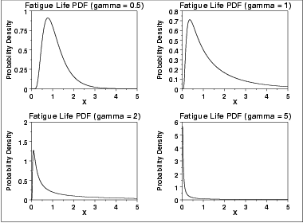
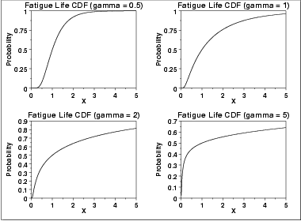
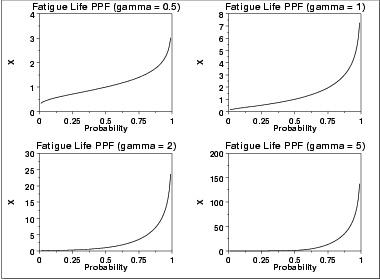
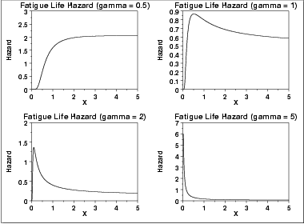
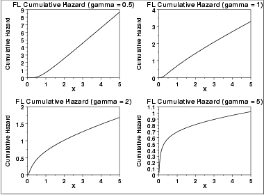
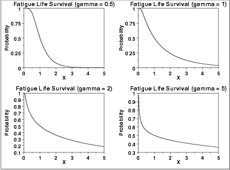
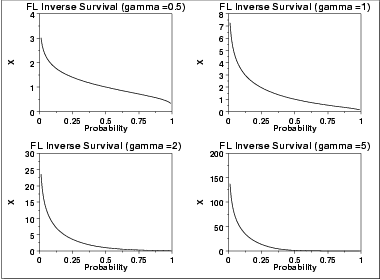

|
1.
Exploratory Data Analysis
1.3. EDA Techniques 1.3.6. Probability Distributions 1.3.6.6. Gallery of Distributions
|
|||||||||
| Probability Density Function |
The Birnbaum-Saunders distribution is also commonly known as the
fatigue life distribution. There are several alternative
formulations of the Birnbaum-Saunders distribution in the literature.
The general formula for the probability density function of the Birnbaum-Saunders distribution is \( f(x) = \left (\frac{\sqrt{\frac{x-\mu} {\beta}} + \sqrt{\frac{\beta} {x-\mu}}} {2\gamma (x-\mu)} \right) \phi \left( \frac{\sqrt{\frac{x-\mu} {\beta}} - \sqrt{\frac{\beta} {x-\mu}}} {\gamma} \right) \hspace{.2in} x > \mu; \gamma, \beta > 0 \) where γ is the shape parameter, μ is the location parameter, β is the scale parameter, \(\phi\) is the probability density function of the standard normal distribution, and \(\Phi\) is the cumulative distribution function of the standard normal distribution. The case where μ = 0 and β = 1 is called the standard Birnbaum-Saunders distribution. The equation for the standard Birnbaum-Saunders distribution reduces to \( f(x) = \left (\frac{\sqrt{x} + \sqrt{\frac{1} {x}}} {2\gamma x} \right) \phi \left (\frac{\sqrt{x} - \sqrt{\frac{1} {x}}} {\gamma} \right) \hspace{.2in} x > 0; \gamma > 0 \) Since the general form of probability functions can be expressed in terms of the standard distribution, all subsequent formulas in this section are given for the standard form of the function. The following is the plot of the Birnbaum-Saunders probability density function.  |
||||||||
| Cumulative Distribution Function |
The formula for the cumulative distribution
function of the Birnbaum-Saunders distribution is
\( F(x) = \Phi(\frac{\sqrt{x} - \sqrt{\frac{1} {x}}} {\gamma}) \hspace{.2in} x > 0; \gamma > 0 \) where \(\Phi\) is the cumulative distribution function of the standard normal distribution. The following is the plot of the Birnbaum-Saunders cumulative distribution function with the same values of γ as the pdf plots above.  |
||||||||
| Percent Point Function |
The formula for the percent point
function of the Birnbaum-Saunders distribution is
\( G(p) = \frac{1} {4} \left[\gamma \Phi^{-1}(p) + \sqrt{4 + (\gamma \Phi^{-1}(p))^{2}}\right]^{2} \) where \(\Phi^{-1}\) is the percent point function of the standard normal distribution. The following is the plot of the Birnbaum-Saunders percent point function with the same values of γ as the pdf plots above.  |
||||||||
| Hazard Function |
The Birnbaum-Saunders hazard function can
be computed from the Birnbaum-Saunders probability density and cumulative
distribution functions.
The following is the plot of the Birnbaum-Saunders hazard function with the same values of γ as the pdf plots above.  |
||||||||
| Cumulative Hazard Function |
The Birnbaum-Saunders cumulative hazard
function can be computed from the Birnbaum-Saunders cumulative
distribution function.
The following is the plot of the Birnbaum-Saunders cumulative hazard function with the same values of γ as the pdf plots above.  |
||||||||
| Survival Function |
The Birnbaum-Saunders survival
function can be computed from the Birnbaum-Saunders cumulative
distribution function.
The following is the plot of the Birnbaum-Saunders survival function with the same values of γ as the pdf plots above.  |
||||||||
| Inverse Survival Function |
The Birnbaum-Saunders inverse survival
function can be computed from the Birnbaum-Saunders percent point
function.
The following is the plot of the gamma inverse survival function with the same values of γ as the pdf plots above.  |
||||||||
| Common Statistics |
The formulas below are with the location parameter equal to zero and
the scale parameter equal to one.
|
||||||||
| Parameter Estimation | Maximum likelihood estimation for the Birnbaum-Saunders distribution is discussed in the Reliability chapter. | ||||||||
| Comments | The Birnbaum-Saunders distribution is used extensively in reliability applications to model failure times. | ||||||||
| Software |
Some general purpose statistical software programs, including
Dataplot, support at least
some of the probability functions for the Birnbaum-Saunders distribution.
Support for this distribution is likely to be available for
statistical programs that emphasize reliability applications.
The "bs" package implements support for the Birnbaum-Saunders distribution for the R package. See
|
||||||||